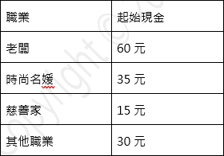
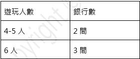
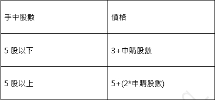
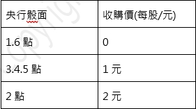
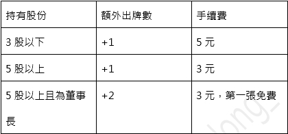
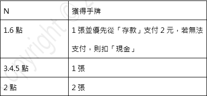
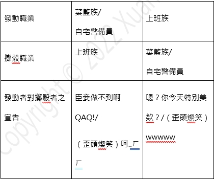
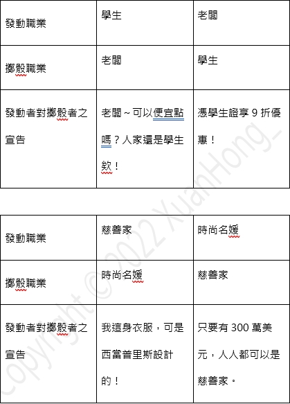

1. 下列所指N皆指六面骰之骰面。
2. 下列所指手續費均為支付央行。
3. 每位玩家起手抽取3張手牌，輪到該玩家時選擇其一發動效果，置入棄牌堆，回抽一張。當牌庫耗盡時，由棄牌堆洗牌後補充。
4. 每當你因使用反制卡牌（N95口罩、甘安捏）效果而缺少卡牌時，補抽相當數量之卡牌。
5. 資產分為現金、存款、股份。
6. 現金為可隨時動用之資產，可購買股份、支付手續費等，存入銀行後則不得再使用
7. 每輪開始時央行將發放現金給每位玩家，第1-5輪3元，第5輪後每輪5元。
8. 因卡牌、行動效果導致暫停回合，不得支領回合金。
9. 指定職業系列卡牌，如「PTT」、「交際酒會」，若其為指定職業之一，也可指定其他職業發動卡牌效果。例如老闆發動「PTT」指定上班族休息一回合。
10. 現金存入銀行後稱為「存款」，不得提領支用。若銀行有「中央存保」效果，則免除「大災厄」系列卡牌影響。遊戲結束時，銀行存款每1元計為1分。
11. 銀行：為存款機構，在加入中央存保後不受「大災厄」系列卡牌影響，存款後不得提領，銀行開設數量如下表。
12. 遊戲設置三間公司（牧亥電力、玄女郵政、崇文捷運），三間公司將各自發行15股份。
13. 每輪所有玩家結束動作後，進行認購股份階段，股份每輪可認購不限公司，且單一公司最多1股，股份價格如下表。
EX申購第6股，第6股價格為5+(2*6)=17
14. 任一玩家持有該公司5股以上且為單一最多股份者，自動成為董事長，其餘持股者稱為股東。
15. 若發生大災厄，董事長須支付所有股東每人下圖骰面賠償，若董事長無法支付，代表其德不配位必須下台，其所有持股必須變賣，收購價由央行擲骰N決定。收購後股份回歸國有，收購價由央行依其金額支付玩家。
16. 若擔任某公司之股東，則可享有股東特權（多間股東效果不重複），每輪可依照股份數發動多張手牌，並依發動手牌張數收取手續費，每輪結束時仍然只會回抽1張手牌。
17. 若可使用手牌低於1張，則強制進行「修身養性」行動，休息一輪並繳回該輪獎勵金獲得手牌，數量由骰面決定。進行本行動時請先詳閱規則18.後進行相對應宣告。
18. 進行「修身養性」行動時，若該局具有下列職業時，請依照下表行動，若無該職業則由右側玩家代骰。若所有玩家客觀地一致認為宣告表現生動值得讚賞，發動者可自央行提領獎金3元。
 